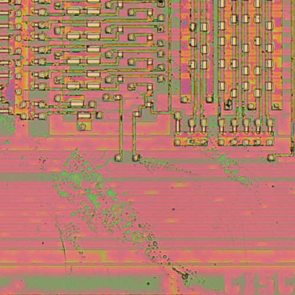

cisc
ROM
Released June 8th, 2020
Buy on Bandcamp
Tracklist
ROM
Released June 8th, 2020
Buy on Bandcamp
- End of Life Patient
- Mud, Blood and Wet Leaves
- Before the Crash
- The World Comes Crashing Down